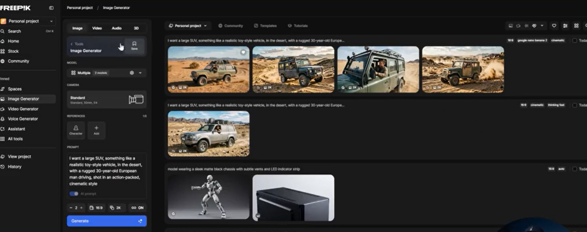
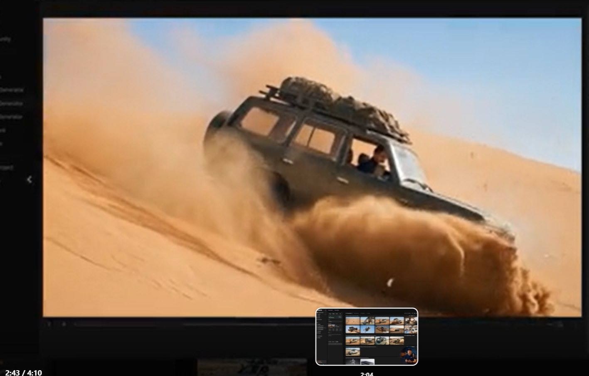
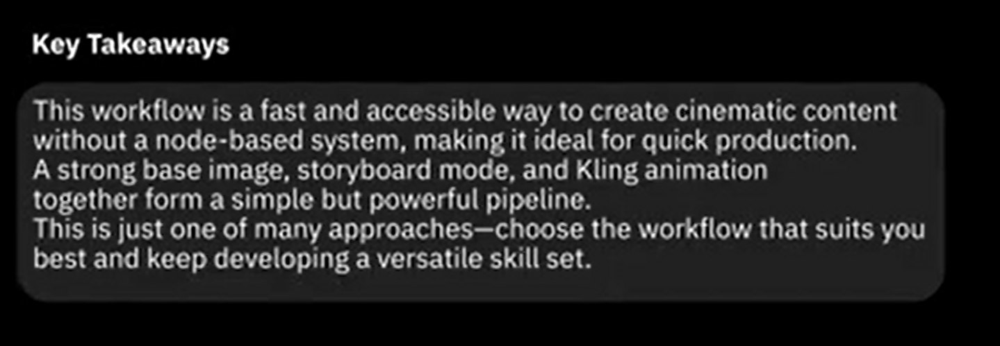
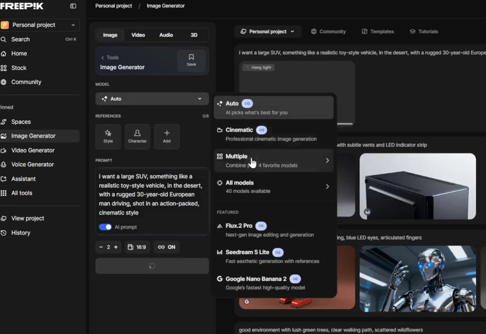

🎯 Por que a Imagem Base é Tudo
A maioria dos vídeos de IA parece inconsistente por um motivo: não existe uma imagem âncora. Cada cena é gerada do zero, com pequenas variações que destroem a continuidade. O fluxo profissional começa com uma única imagem — a base visual de todo o filme.
🎯 O Conceito de Frame Âncora
A imagem base é o DNA visual do seu filme. Ela carrega o personagem, o ambiente, a paleta, a iluminação e o mood. Tudo o que vier depois — storyboard, animação, transições — vai herdar dessa primeira escolha. Errar aqui é refazer tudo. Acertar aqui é ganhar consistência grátis.
- • Define o personagem: rosto, roupas, pose, atitude
- • Define o ambiente: local, hora do dia, clima, atmosfera
- • Define o mood: paleta de cores, contraste, tom emocional

Frame âncora: carro 4x4 numa trilha de montanha — define personagem, ambiente e mood

Resultado cinematográfico que herdou DNA visual do frame base
🎨 Escolhendo o Modelo
O Freepik oferece três modelos principais para gerar a imagem base — cada um com força em um cenário diferente. Escolher o modelo errado é começar o filme com o pé esquerdo.
Nano Banana Pro
Coerência alta, edição local poderosa
Ideal quando você precisa iterar rápido sobre o mesmo personagem em cenas diferentes. Mantém identidade facial e elementos-chave.
Mystic
Realismo fotográfico, peso cinematográfico
A escolha para frames com look cinematográfico — luz natural, profundidade de campo, texturas reais. Premium para cenas hero.
Flux
Velocidade e versatilidade ampla
Bom para exploração rápida de variações estilísticas. Use quando ainda está fechando o conceito visual.
💡 Regra prática
Comece pelo Flux para descobrir o conceito. Quando achar a direção, refaça o frame final no Mystic para ganhar peso cinematográfico. Use Nano Banana Pro só quando precisar editar pontualmente o mesmo frame.

Cena final com qualidade Mystic — peso cinematográfico no detalhe da textura e luz
✍️ Editor de Prompts Integrado
O Freepik tem um Editor de Prompts embutido no Image Generator — uma camada de assistência que pega seu texto cru e expande para um prompt cinematográfico completo, com câmera, lente, luz e mood.
🪄 De texto cru a prompt cinematográfico
Antes (texto cru)
"um carro 4x4 numa trilha"
Depois (Editor de Prompts)
"Cinematic wide shot of a rugged 4x4 SUV climbing a muddy mountain trail at golden hour, anamorphic lens, shallow depth of field, volumetric sunlight piercing through pine trees, dust particles in the air, low angle hero shot, photorealistic"
✓ Use o Editor quando
- ✓Você sabe a cena mas não a linguagem técnica de câmera
- ✓Está testando direções estilísticas diferentes
- ✓Quer enriquecer um prompt vago em segundos
✗ Pule o Editor quando
- ✗Já tem um prompt validado em outras cenas — não reinvente
- ✗Precisa de controle exato palavra-por-palavra
- ✗Está iterando micro-ajustes em uma imagem já boa
🔄 Gerando Variations
Nunca aceite a primeira geração. O fluxo correto é gerar múltiplas variações do mesmo prompt e comparar lado a lado. A IA tem variância natural — uma das versões será visivelmente melhor que as outras.
Gere 4 versões em paralelo
O Image Generator do Freepik permite criar batches de 4 imagens com o mesmo prompt — isso já dá variedade suficiente para escolher.
Use Variations no melhor candidato
Quando uma das 4 estiver perto do ideal, clique em Variations para gerar 4 versões próximas dela — refinando sem perder a base.
Itere até o "wow"
Pare quando uma versão te fizer sentir algo. Esse é o sinal — confie nele.

Após várias variations, o frame que captura movimento e dinâmica do carro
🏆 Selecionando o Golden Frame
Entre todas as variações, uma será o golden frame — a imagem que vai virar referência de tudo. Ela precisa passar em três critérios objetivos antes de você se apaixonar por ela.
🏆 Os 3 critérios do Golden Frame
Composição — o sujeito está bem posicionado, o frame respira, o olhar tem para onde ir.
Iluminação — a luz conta a história. Tem direção, contraste e mood — não é luz "neutra de IA".
Look cinematográfico — parece um still de filme, não uma foto qualquer. Tem peso, atmosfera, intenção.

Golden frame: composição, luz e look cinematográfico todos presentes

Versão alternativa — boa, mas menos peso cinematográfico que a escolhida
📌 Definindo a Referência
Com o golden frame em mãos, você precisa marcá-lo como referência oficial do projeto. Esse passo simples evita que você se perca no meio do storyboard e gere cenas com personagens diferentes.
📌 Checklist da Referência
- →Salve o golden frame em uma pasta dedicada do projeto
- →Anote o prompt completo que gerou ele (você vai reusar)
- →Anote o modelo, seed e parâmetros usados
- →Use ele como input em todas as próximas etapas (storyboard, animação)
🎬 Esse frame é o seu contrato visual
Daqui pra frente, qualquer cena que não combine com o golden frame está errada. Ele é a régua. É a fonte da verdade. Quando estiver em dúvida no meio do projeto, volte para ele — ele decide.
✅ Resumo do Módulo 5.1
Próximo Módulo:
5.2 — Construção do Storyboard: como transformar a imagem base em uma sequência narrativa de 6 a 9 frames coerentes